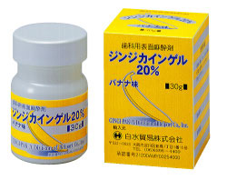
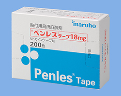
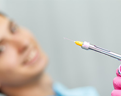
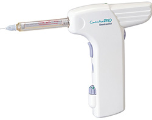
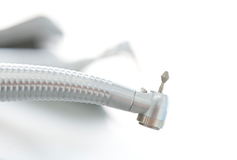
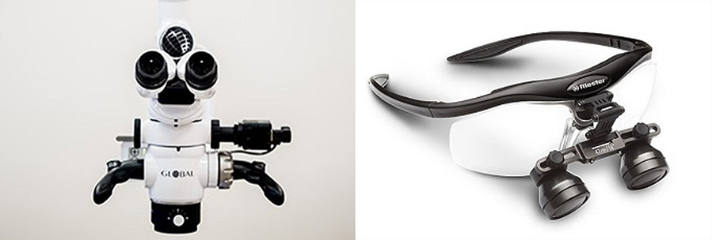
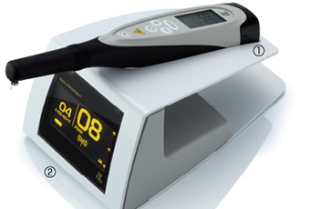
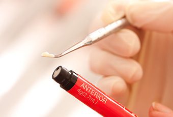
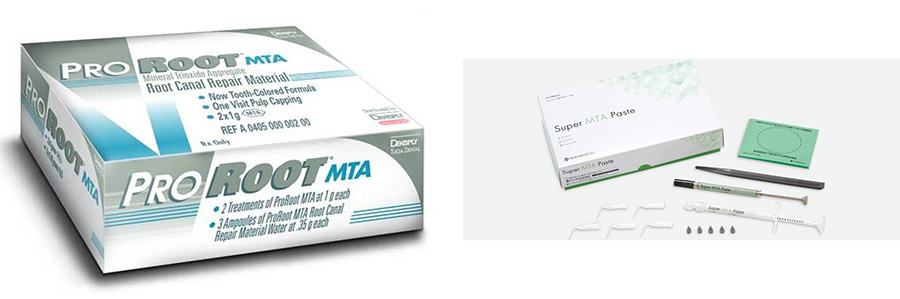

- ホーム
- 虫歯治療
天王寺まつい総合歯科の虫歯治療
痛みへの配慮
歯科治療に伴う痛みが原因で、歯医者から遠のいている人は少なくありません。歯を削られる時の痛みは、日常では経験することがないものなので、そのお気持ちもよく理解できます。
当院では、そんな患者さまが少しでも楽に治療が受けられるよう、いくつかの点に配慮しております。
表面麻酔の使用
-

ジェルタイプの表面麻酔
-

シールタイプの表面麻酔
「虫歯治療は痛い」と感じていらっしゃる方の多くは、麻酔針を刺し入れる際の痛みも苦手としていることかと思います。そこで当院では、麻酔を打つ前に必ず表面麻酔を施すようにしています。
ジェル状の薬剤を歯茎に塗るだけで、痛みに対する感覚が麻痺します。痛みに敏感な方に対しては、比較的効き目が強いシールタイプの表面麻酔もご用意しております。
極細の麻酔針の使用

麻酔注射に使用する針は、細ければ細いほど、刺入時の痛みが軽減されます。
当院では、今現在販売されている注射針の中で、最も細い「33G」を使用しておりますので、注射に伴う痛みも最小限に抑えることが可能です。
電動麻酔器の活用

注射に伴う痛みを和らげるためには、「注入速度を一定に保つ」必要があります。麻酔薬を急激に注入すると、細胞や組織に強い刺激が加わり、痛みが生じやすくなるからです。
そこで当院では、麻酔薬の注入速度を機械制御できる「電動麻酔器」を活用しております。薬液がゆっくりと注入されるため、麻酔に伴う痛みも最小限に抑えられます。
最小限しか削らない虫歯治療

私たちの歯は、一度削ってしまうと、元に戻ることはありません。他の組織とは異なり、再生することがないのです。それだけに、虫歯治療では「可能な限り削らない」ことが重要となってきます。
当院では、患者さまの大切な歯質を少しでも保存できるよう、以下に挙げるような取り組みを行っております。
「マイクロ&ルーペ」による精密治療
歯を削る量を最小限に抑えるためには、健康な歯質と虫歯に侵されている歯質の境界をできるだけ正確に把握することが大切です。そこで当院では、まず、検知液で虫歯を染色し、治療時の視野を拡大する目的で、「マイクロスコープ」と「高倍率ルーペ」を活用しております。

マイクロスコープは、歯科用顕微鏡と呼ばれているだけあって、視野の肉眼の20倍程度まで拡大することが可能です。高倍率ルーペは、操作性が非常に高く、いろいろな場面で活用しやすいツールといえます。これらを用いることで、患者さまの歯質を最大限残せるよう努めております。
経験や勘に頼らずに虫歯を判別できる「ダイアグノデント」

虫歯治療を行う上で、歯科医の経験や勘が役立つことは多々あります。ただ、発生して間もない虫歯に関しては、経験豊富な歯科医でも判別が難しい傾向にあります。そこで有効なのが「ダイアグノデント」です。
この装置は、歯の表面にレーザーを当てることで、虫歯の有無及び程度をピンポイントで判別することができます。虫歯の検出率は90%にも及ぶため、虫歯を判断するツールの一つとして大変役に立ちます。
1日で治療が完了する「コンポジットレジン」、「ハイブリットセラミックス」

虫歯を削った後は、歯科用材料を詰める必要があります。これまでは、いわゆる「銀歯」と呼ばれる金属製の詰め物を装着する傾向にありましたが、当院では白くて目立ちにくい、保険診療で可能なコンポジットレジン、自由診療で可能なひとつ上の歯科材料であるハイブリットセラミックスもご提案しております。
銀歯とは異なり、型取りをする必要がなく、1日で治療が完了するケースも珍しくありません。また、銀歯よりも歯を削る量を抑えることができます。さらに、金属アレルギーのリスクがゼロという利点もございます。
ちなみに、当院では直接法にて充填する際に、「3Dリテーナー」や「Vリング」、「アダプトセクショナルマトリックス」といった装置を活用することで、より美しく、より機能的な歯の修復を実現し、治療の質を最大限にまで高めております。
深い虫歯でも可能な限り神経を残す
MTAを使い神経を保存・保護する治療法も導入しております
当院ではMTA(Mineral Trioxde Aggregate＝ミネラル三酸化物)セメントを使った治療法を導入しており、通常であれば神経をとらないといけないぐらいの深い虫歯であっても神経を残せる可能性が高い治療を提供することができます。
(もちろん急性症状や感染による神経の失活＝神経死がある場合は、部分抜髄や全部抜髄が治療として必要となることもあります)

MTAセメントは、他にあるような薬剤等によるアレルギーの心配やエビデンス(科学的根拠)の低い治療法とは違い、生体親和性が高くエビデンスの確立した非常に安心・安全なものです。